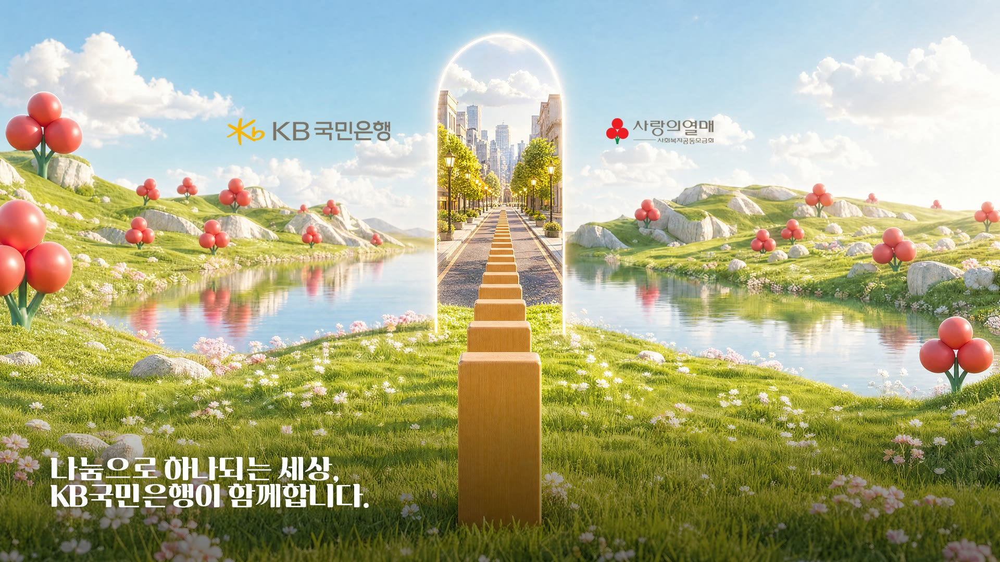

희망2027나눔캠페인 성금 전달식 나눔이벤트 연출 시안 도미노가 번져 등대를 밝히고, 그 빛이 마을을 채웁니다
기술 · 운영
1안 · 실물 도미노 + LED
1안 — 사람이 아니라 실물 도미노를 봅니다
 CUT 01 · 도미노가 사라지는 순간
CUT 01 · 도미노가 사라지는 순간
영역에서 사라지면 · 트리거
키넥트는 화면 앞 도미노가 서 있는 자리 하나만 봅니다. 서 있는 동안에는 아무 일도 일어나지 않고, 넘어가면서 그 자리에서 사라지는 순간이 트리거입니다. 물체의 유무만 보므로 조명 · 의상 · 주변 인원에 흔들리지 않고, 사람의 손 · 제스처 · 위치는 읽지 않습니다.
기술 · 운영
2안 · LED 단독
2안 — 화면 속 첫 도미노 자리를 봅니다

CUT 01 · 손 감지 — 1초 게이지
손이 들어온 뒤 1초 · 트리거
실물이 없으므로 키넥트는 화면 속 첫 도미노가 선 자리 하나만 봅니다. 그 자리에 손이 들어오면 아래에서부터 빛이 차오르고, 다 차오르는 1초 뒤에 도미노가 넘어갑니다. 손을 빼면 게이지가 되돌아가므로 실수로 걸리지 않고, 두 분은 차오르는 것만 보고 계시면 됩니다.
식순 · 큐 관리
행사 운영
나눔이벤트는 식 한가운데의 한 구간입니다
파일을 하나씩 여는 것이 아니라, 운영자가 식순대로 준비된 화면을 ← → 로 넘깁니다. 아래는 동작 예시입니다 — 콘솔을 클릭하면 방향키로 조작할 수 있습니다.
← → 큐 이동 · 목록 클릭 콘솔 활성화
표지
/ 11